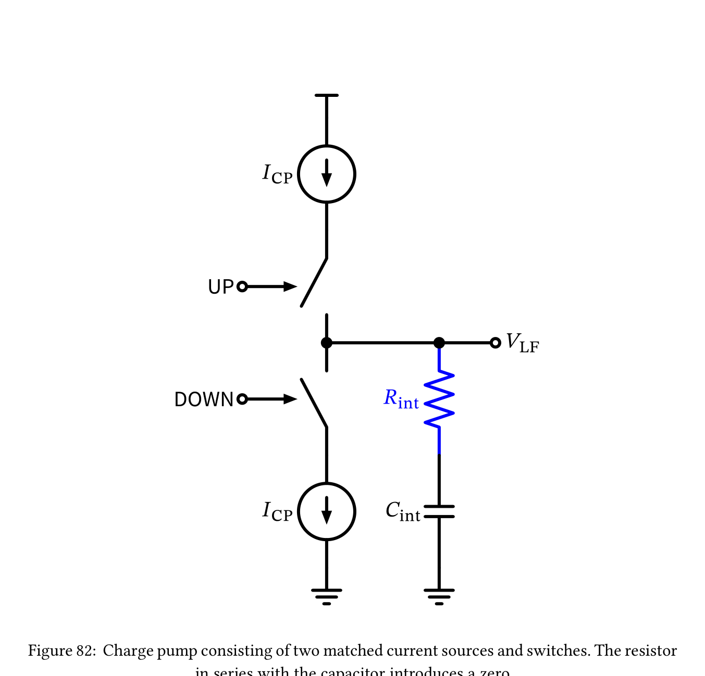

CP 脉冲如何给电容充电
UP 源出电流，DN 吸收电流。先求两路电流的差，再对时间积分，就得到这一拍注入节点的电荷。若只有一个理想电容承受这一拍的电荷，电压变化就是电荷除以电容。


匹配且接近锁定时，每圈相位误差对应一个参考周期的净脉宽，故平均电流的鉴相增益为 ICP/(2π)，单位 A/rad。复位延迟可以保留短重叠脉冲。电流失配时，即使两路脉宽相同，重叠区也会产生净电荷。
按网表脉宽与电流设置重建的净电流（µA）
局部 ngspice 波形去直流（mV）
两张图共用 1 µs 周期。先在电流图看约 60 ns 的有效区间，再在电压图看抬升和回落。局部实验还有 10 kΩ 偏置路径，所以整周期波形也包含电阻电流。
在 ADF4351 手册上找到测点
从第 7 页引脚表找 CPOUT 和 VTUNE：前者是外部环路滤波器的电流输入，后者是滤波器送回芯片的 VCO 调谐电压。再看规格表同一行的测试条件和单位，区分设置的泵电流与该引脚的合规电压范围。